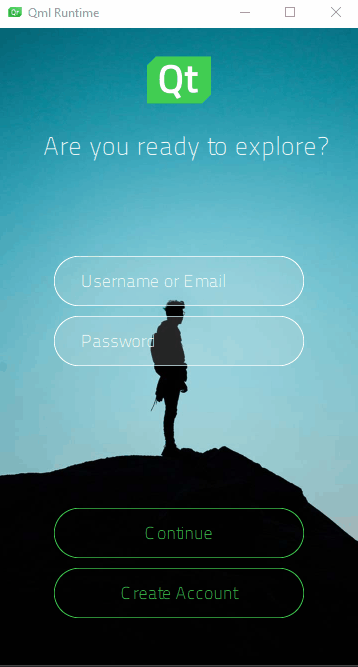

Tutorials

Video Tutorials
When you run Qt Design Studio, the Tutorials tab in Welcome mode contains links to video tutorials. To watch a tutorial on YouTube, select it.
Written Tutorials
You can follow a set of hands-on tutorials that illustrate how to use the features of Qt Design Studio. Even if you plan to export your designs from a design tool, it is useful to go through tutorials to learn to use Qt Design Studio. In particular, Log In UI - Components describes the terms and concepts that you will run into when exporting designs with Qt Bridge.
Before you start, take a look at the following topics to familiarize yourself with the parts of Qt Design Studio in general, and the Design mode in particular: User Interface and Design Views.
In addition to these tutorials, Qt Design Studio comes with examples that you can open from the Examples and tabs in the Welcome mode. For more information, see Examples.
Illustrates how to add support for multiple languages to your project. | |
Illustrates how to create animated state transitions. | |
Illustrates how to create an application in Qt Design Studio and add a backend in Qt Creator. | |
Illustrates how to use wizard templates to create a simple UI that contains a text label, images, and push buttons. | |
Illustrates how to position UI components on pages using anchors and positioners. | |
Illustrates how to use states to create a second UI page. | |
Illustrates how to use the timeline and states to animate UI components. | |
Illustrates how to create a fire effect with the Qt Design Studio particle system. | |
Illustrates how to create a rain and snow effect with the Qt Design Studio particle system. | |
Illustrates how to set up a 3D scene with, for example, lights, models, and materials in Qt Design Studio. | |
Illustrates how to create timeline animations and bind them to properties in Qt Design Studio. |